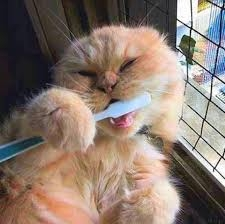
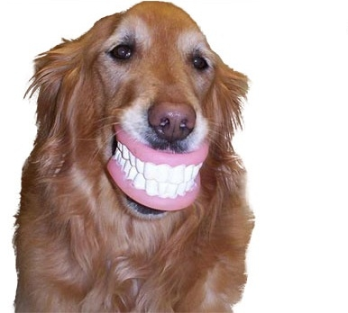
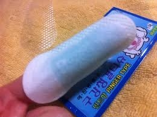
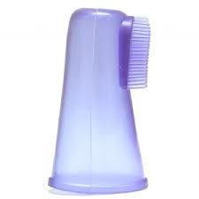
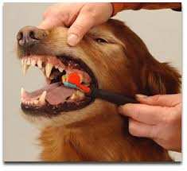
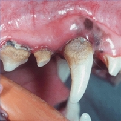
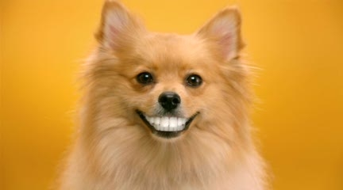

 
강아지도 양치질이 필요하다는 사실 아시나요?
강아지들의 경우 이빨이 사람처럼 잘 썩지는 않는답니다.
강아지 침의 PH가 알칼리성이 강하므로 세균이 내는 산성을 중화시키는 이유도 있고
사람처럼 치아 사이에 잘끼는 음식을 먹는게 아니라 사료를 먹기 때문이지요.
양치질이 필요한 이유는 치주질환, 즉 치아 주변 잇몸,치아 인대에 대한 질환을 막기 위해서랍니다.
어릴때부터 올바르게 관리를 해주어야만 건강한치 치아를 평생동안 유지할수 있느냐,
치주질환에 걸린 아픈 이를 가지고 살아가느냐를 결정하는 중요한 시기이기 때문입니다.
바로 1살 미만일때가 양치질에 대한 교육,학습이 이뤄질수 있는 매우 중요한 시기에요.
나이가들어서도 이닦기에 대한 학습이 가능할수 있지만 나이가 든만큼 교육이 힘들어지죠.
사람도 어릴때부터 올바른 양치습관을 가져야 하듯이 강아지도 마찬가지랍니다.
강아지 젖니가 빠지고 영구치가 나는 시기는 대략 3~8개월사이인데
유치니까 양치질이 필요없겠지라고 생각하지마시고 어릴때부터 학습을 시킨다고 생각하셔야 한답니다.^^
이제부터 강아지 이닦기 학습 요령에 대해서 알려 드릴께요.
양치질 시작하기
중요한 것은 양치질이 강아지들에게 즐거워야하며 천천히 적응할수 있도록 단계를 높여가야 합니다.
억지로 무리하게 시킨다면 정신적 트라우마로 인해 양치질을 싫어하겠죠?^^
1. 일단 치약 맛에 익숙해지도록 한다
치약을 손가락에 짜서 핥아먹도록 하고 먹을 경우 칭찬과 간식같은 보상을 해줍니다.
만일 절대 안먹으려 한다면 다른 맛의 치약을 이용해보세요. 며칠간 반복하여 치약맛을 좋아하도록 합니다.
주의하실 점!! 불소가 포함된 사람 치약은 금지!! 강아지들은 치약을 먹어버리니깐요.
2. 손가락을 입안에 넣어 익숙해지도록 한다
손가락에 치약을 조금 묻혀 송곳니 부분을 집중적으 부드럽게 문질러줍니다.
3. 거즈나 구강청결티슈, 손가락 칫솔에 익숙해지도록 한다
거즈나 티슈, 손가락 모양 칫솔에 치약을 묻혀 역시 익숙해지도록 입안을 문질러줍니다
 
4. 이제 칫솔과 치약에 익숙해졌으므로 본격적인 양치질을 시작?
입술을 부드럽게 들어올려 잇몸에 45도 각도로 부드럽게 양치질을 합니다.

처음에는 송곳니나 앞니정도만으로도 충분하고 단계적으로 범위를 넓혀나갑니다.
혀가 있는 이빨 안쪽 부분은 혀가 움직이므로 집중적으로 닦으실 필요는 없습니다.
이닦기 시작 시기??
강아지가 유치를 가는 시기는 생후 3개월~8개월입니다.
3~8개월 사이에 순서대로 조금씩 유치가 빠지고 영구치가 나게 되는데요 사실 유치는 빠질 이빨이므로
양치질이 꼭 필요한건 아니랍니다.
but!!! 어릴때 학습을 시키기가 쉬우므로 되도록이면 3개월째부터는
양치질에 대한 훈련을 조금씩 시키시는게 좋겠죠
아래 그림처럼 단단한 치석이 이미 생겨있다면 양치질만으로는 제거가 안되므로 스켈링이 필요하지만

플라그는 양치질만으로 충분히 제거가 된답니다.^^
강아지 이빨닦기!! 익숙해지면 절대 어렵지 않아요

|